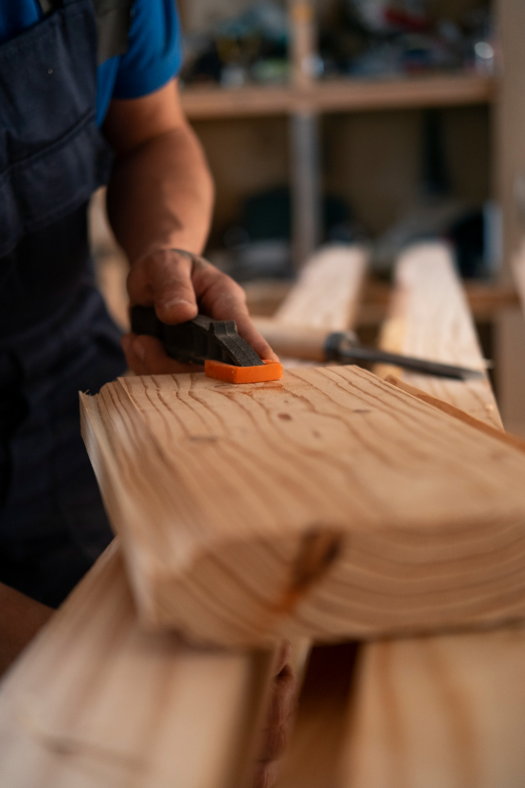
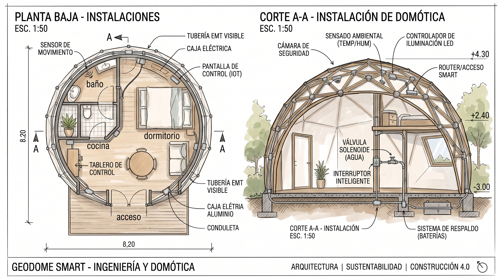

Competitividad & Desarrollo Tecnológico Productivo
Geodome Smart: Alojamiento Ecoturístico Inteligente con Gemelo Digital Integrado
CONTENIDO Ruta de Exposición · 20 Minutos
01. Objetivos Versión Oficial Publicada en Railway (MGA)
Geodome Smart: Alojamiento Ecoturístico Inteligente con Gemelo Digital Integrado
Desarrollar un modelo de operación inteligente para infraestructuras ecoturísticas modulares mediante la integración de flujos de fabricación digital y sistemas de domótica abierta, orientado a fortalecer las competencias técnicas en Construcción 4.0 y optimizar la eficiencia operativa en alojamientos sostenibles.
1. Variables de Marcos Rígidos y Hardware Abierto
Caracterizar las variables de diseño estructural de marcos rígidos y los requerimientos técnicos de automatización (IoT), mediante el análisis de comportamiento de cargas y la evaluación de protocolos de hardware abierto, para definir los parámetros técnicos de integración en la infraestructura modular.
2. Modelo BIM, Mecanizado y Arquitectura Domótica
Diseñar un modelo de infraestructura inteligente basado en flujos de trabajo BIM, que articule la fabricación digital (CNC) con una arquitectura abierta de domótica (IoT), estableciendo los protocolos técnicos para la integración nativa de sensores y actuadores en marcos rígidos de madera.
3. Unidad Funcional a Escala y Gemelo Digital
Prototipar una unidad ecoturística funcional, implementando el modelo de operación inteligente y el gemelo digital para validar, en entornos controlados, la gestión autónoma de variables críticas y la viabilidad de transferencia tecnológica al sector productivo y académico.
02. Impacto Formación Profesional & Diseño Curricular en la Línea Medular de la Madera
02. Impacto Nuevos Procesos BIM Integrados a la Fabricación Convencional de la Madera
Modelado Paramétrico & Familias en Madera
Creación de bibliotecas BIM de perfiles de madera, paneles, herrajes y mobiliario interior con propiedades reales de veta, escuadría, contracción y tolerancias de ensamble.
Coordinación MEP-Domótica en Madera (Clash Detection)
Trazado digital anticipado de tubería EMT, conduletas, cajas eléctricas, sensores y nichos en el mobiliario antes de cortar una sola pieza de madera en el taller.
Traducción a Cartas de Producción Convencional
El modelo BIM exporta automáticamente listas de despiece (BOM), ángulos de inglete/bisel para sierra escuadradora, hojas de ruta de cepillado/regruesado y plantillas 1:1.
Trazabilidad por Código QR y Gemelo Digital VR
Cada pieza trabajada en carpintería convencional conserva su ID del modelo BIM para el montaje guiado y se sincroniza con el modelo VR-Ready en Unity.


02. Impacto Capacidad Instalada: Maquinaria Convencional + Articulación con Router CNC
Maquinaria y Herramientas Convencionales de Madera
Aprovechamiento pleno de los talleres de carpintería y ebanistería del CTM para la preparación estructural y del mobiliario:
- ▪ Dimensionado y Escuadrado: Sierra circular escuadradora, sierra sinfín e ingleteadora para cortes longitudinales y transversales de listones y tableros.
- ▪ Preparación Geométrica: Cepilladora (canteadora) y regruesadora para garantizar caras de referencia planas y espesores calibrados antes de entrar a plantillas o CNC.
- ▪ Ebanistería y Acabados: Trompo (tupí), taladro de árbol/horizontal, ruteadoras manuales, lijadoras de banda/orbital, prensas de banco y cabina de recubrimientos.
Puente Técnico: Taller Convencional ↔ Máquina CNC
El proyecto establece un protocolo de manufactura balanceada que evita saturar el Router CNC y enseña al aprendiz cuándo usar cada tecnología:
- 1. Cero Referencia Unificado (Datum): Las caras cepilladas y escuadradas en las máquinas convencionales sirven como tope cero exacto sobre la mesa del CNC.
- 2. Pre-desbaste Convencional: Los cortes rectos largos se hacen en escuadradora (3 veces más rápido), reservando el CNC para geometrías complejas y cajeados.
- 3. Post-procesamiento en Banco: El CNC entrega piezas con guías de pre-ensamble que pasan directamente a bancos de carpintería convencional para lijado, inmunizado y montaje en seco.
Operaciones de Alta Precisión en el Router CNC
La máquina CNC de 3/4 ejes del CTM interviene estratégicamente en las operaciones donde aporta valor insustituible:
- ▪ Cajeados y Nichos Domóticos: Fresado milimétrico de cavidades embebidas para sensores (DHT22, humo), pantallas, servomotores y canales ocultos para cableado.
- ▪ Nesting de Cerramientos y Mobiliario Curvo: Corte optimizado de paneles triangulares, costillas curvas del mobiliario y piezas del deck con mínimo desperdicio.
- ▪ Repetibilidad para Kit de Partes: Garantiza intercambiabilidad 100% entre piezas para el montaje y desmontaje en INTERZUM 2028.
Ventajas del Modelo Articulado (Convencional + CNC + Medialab)

02. Impacto Hibridación Impresión 3D de Dispositivos Reutilizables + Mecanizado en Planta
1. Maquetas Estructurales y Validación de Frecuencias
Impresión 3D completa de barras y nodos a pequeña escala para verificar estabilidad, secuencia de montaje y ubicación de sensores antes de consumir madera en planta.
2. Nodos de Unión Estructural y Encapsulados IoT (PETG / ABS-CF)
Conectores multiaxiales impresos en 3D con canal pasacables interno que reciben los perfiles de madera y carcasas a medida (enclosures) para sensores y servomotores.
3. Dispositivos Reutilizables Impresos en 3D (Jigs & Fixtures) para Adaptar las Máquinas de la Planta de Producción
La impresión 3D se convierte en herramental de planta: diseñamos e imprimimos dispositivos técnicos reutilizables con insertos metálicos y bujes de acero que se acoplan a las máquinas convencionales del CTM para mecanizar piezas de madera con precisión de control numérico.

03. Productos desarrollados o potenciales Entregables SENNOVA · Matermob · Medialab
03. Productos desarrollados o potenciales Cronograma de Trabajo y Etapas de Producción rumbo a INTERZUM 2028
Geodome Smart: Fortaleciendo la línea medular de la madera y el mobiliario mediante la articulación de Carpintería, Ebanistería, Procesos BIM, Manufactura Híbrida (Convencional + Jigs 3D + CNC), Domótica Abierta y Gemelo Digital VR.